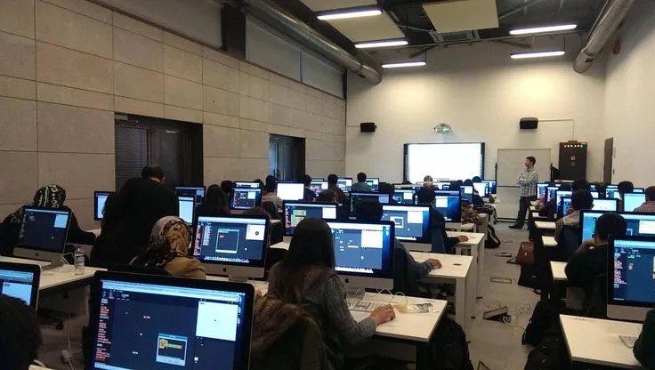
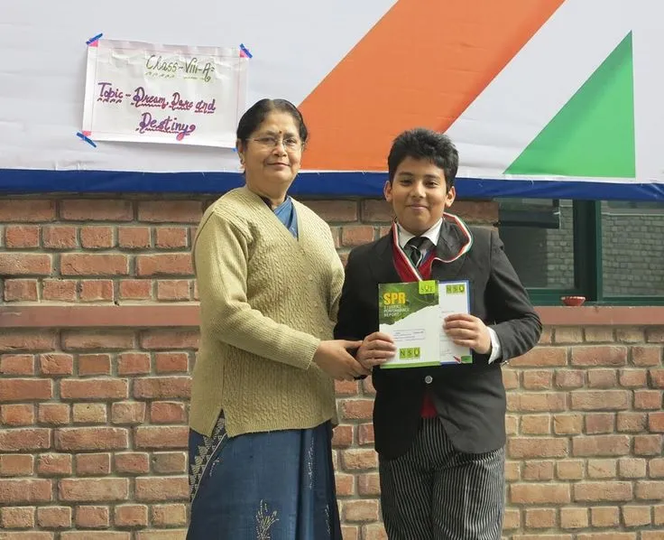

Jenjang Pendidikan
Fokus pembelajaran yang disesuaikan dengan tahap perkembangan anak.

TK & PAUD
Pembelajaran berbasis bermain (play-based learning). Fokus pada motorik halus, motorik kasar, pengenalan huruf, angka, dan kemandirian sosial anak usia dini.

Sekolah Dasar (SD)
Membangun literasi, numerasi, dan akhlak mulia. Dilengkapi dengan pengenalan teknologi dasar dan bahasa Inggris untuk membekali siswa menuju jenjang menengah.

Sekolah Menengah (SMP)
Pengembangan minat dan bakat, berpikir analitis, serta persiapan akademik lanjutan. Ditambah dengan program kepemimpinan (leadership) dan entrepreneurship.